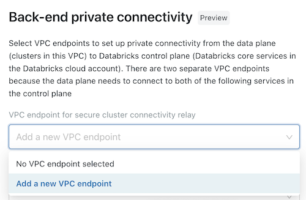

Create network configurations for custom VPC deployment
This article describes a process that is available only for accounts on the E2 version of the Databricks platform.
By default, Databricks creates a VPC in your AWS account for each workspace and creates new Databricks Runtime clusters in those workspaces. If you are on the E2 version of the Databricks platform, you have the option to create workspaces in your own VPC, known as a customer-managed VPC. This article describes how to use the account console to create and manage network configurations for your account when you want to use a customer-managed VPC. To learn how to create network configurations using the Account API, see Create a workspace using the Account API.
Using your own VPC enables you to configure it according to your organization’s enterprise cloud standards while still conforming to Databricks requirements. You cannot migrate an existing workspace to your own VPC.
The following related sections discuss updating existing network and configuration objects:
Create a network configuration
To create a network configuration for a customer-managed VPC, you must create the VPC and subnets to meet Databricks requirements and then reference that VPC—including network objects such as VPCs, subnets, and security groups—in a network configuration for your Databricks account.
Note
These instructions show you how to create the network configuration from the Cloud resources page in the account console before you create a new workspace. You can also create the storage configuration in a similar way as part of the flow of creating a new workspace. See Manually create a workspace (existing Databricks accounts).
Set up your VPC, subnets, and security groups, using the instructions in Configure a customer-managed VPC.
Copy the IDs for each of these objects for use in the next step.
Important
You can share one customer-managed VPC with multiple workspaces in a single account. You do not have to create a new VPC for each workspace. However, you cannot reuse subnets or security groups with any other resources, including other workspaces or non-Databricks resources. If you plan to share one VPC with multiple workspaces, be sure to size your VPC and subnets accordingly. Because a Databricks network configuration encapsulates this information, you cannot reuse a network configuration across workspaces.
In the account console, click Cloud resources.
Click Network.
From the vertical navigation on the page, click Network configurations.
Click Add network configuration.
In the Network configuration name field, enter a human-readable name for your new network configuration.
In the VPC ID field, enter the VPC ID.
In the Subnet IDs field, enter the IDs for at least two AWS subnets in the VPC. For network configuration requirements, see Configure a customer-managed VPC.
In the Security Group IDs field, enter the ID for at least one AWS security group. For network configuration requirements, see Configure a customer-managed VPC.
(Optional) To support AWS PrivateLink back-end connectivity, you must select two VPC endpoint registrations from the fields under the Back-end private connectivity heading.
If you have not yet created the two AWS VPC endpoints that are specific to your workspace region, you must do so now. See Step 2: Create VPC endpoints. You can use the AWS Console or various automation tools.
For each field, either choose existing VPC endpoint registrations, or choose Register a new VPC endpoint to create one immediately that references the AWS VPC endpoints that you have already created. For guidance on fields, see Manage VPC endpoint registrations.
Click Add.
View network configurations and any validation errors
In the account console, click Cloud resources.
Click Network.
All network configurations are listed, with VPC ID, VPC Status, and Created date displayed for each.
Click the network configuration name to view more details, including subnet IDs, security group IDs.
If there are network validation error messages, they will be shown here.
Important
Some network validation errors are detected only when the configuration is used to create a new workspace. If a new workspace fails to deploy, re-visit this page to view new network validation error messages.
Delete a network configuration
Network configurations cannot be edited after creation. If the configuration has incorrect data or if you no longer need it, delete the network configuration:
In the account console, click Cloud resources.
Click Network.
On the row for the configuration, click the kebab menu
 on the right, and select Delete.
on the right, and select Delete.In the confirmation dialog, click Confirm Delete.